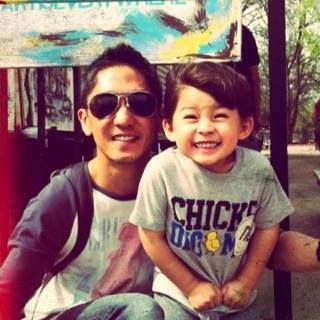

About Me
After receiving my BS in Health Science at the University of Nevada, Reno, I went on to graduating from the Art Institute of California, Los Angeles with a degree in Graphic Design. I worked as a Junior Designer/Illustrator at Upfront Productions in Minneapolis, MN. I then went on to working as the lead in-house designer at Kass Clinics in St. Louis Park, MN. Working side-by-side with the owner, marketing director, and web developer; while designing and project managing all aspects of the internal and external marketing collaterals. Raised in the Reno/Lake Tahoe area. Now residing in the Twin Cities. Currently studying Full-Stack Web Development through the University of Minnesota Continuing Education Program.
Finding balance with being a father and living/breathing all things web development during the day. While exploring creative side-projects on my spare time, such as fine art painting (past shows at the Esoteric Gallery and Silver Peak Brewery in Reno, NV) and performing live acoustic music at local open-mic's (past shows at Moto-i, Lee's Liquor Lounge, Minnesota Music Cafe).
Things I love... laughing with my son, freestyle skiing, social dancing (Kizomba, Bachata, Salsa, Brazilian Zouk), singing bad 90's karaoke, and finding the best places for Pho in the Twin Cities.
Things I enjoy... the ocean, fresh air, the pursuit of happiness, Bootstrap, blue bird powder days, Podcasts, Gore-Tex, my cat greeting me at the door, Pinterest, vintage t-shirts, REI, extra ranch dressing, window seat on airplanes, oven-fresh cookies, matinee movies, live music, pistachios, Spotify, beef jerky, sketchbooks, homemade french bread, Rummikub at the cabin, Korean BBQ, creativity, epiphanies, the birth of an idea... and especially random road trips to new places. Cheers!
Connect with Me